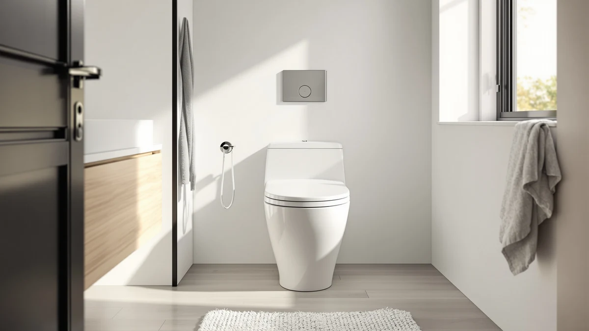

VEVOR One Piece Toilet Review (2026): Worth It?
Prices and picks verified as of September 2026. Independent, reader-supported reviews.


Quick Answer
The VEVOR One-Piece Toilet Elongated Toilet costs $202.54 and ships as a single molded unit built for a standard 12-inch rough-in, the distance most US bathrooms are already plumbed for. This vevor one piece toilet review breaks down what that price buys, where VEVOR leaves specs undocumented, and pairs the toilet with a Munchkin potty training seat sized to fit the same elongated bowl for households with a toddler in the bathroom.
Our pick: VEVOR One-Piece Toilet Elongated Toilet, $202.54 Check Price on Amazon
Bottom line: our top pick is the VEVOR One-Piece Toilet at $202.54.
Things to Know Before You Buy
- VEVOR prices the One-Piece Toilet Elongated Toilet at $202.54, placing it in the mid-range among one-piece toilets covered on this site.
- It's built as a one-piece design, so VEVOR molds the tank and bowl into a single unit instead of bolting two separate parts together, removing the seam where grime collects on an older two-piece toilet.
- The listing specifies a 12-inch rough-in, the standard distance most US bathrooms are plumbed for, so measure your own rough-in before you order.
- VEVOR hasn't published a material spec, seat height, flush rating or public review count for this listing, a gap this vevor one piece toilet review flags throughout.
This vevor one piece toilet review breaks down whether VEVOR's $202.54 One-Piece Toilet Elongated Toilet earns a spot in your bathroom, based on the rough-in size, price and photos VEVOR publishes on its own Amazon listing. VEVOR molds the tank and bowl into one piece rather than bolting two separate parts together, the construction that removes the seam where grime collects on an older two-piece toilet. The bowl is elongated rather than round-front, a shape most adults find roomier, and the listing specifies a 12-inch rough-in, the distance most US bathrooms are already plumbed for. We pulled every detail VEVOR publishes, the rough-in figure, the price and the five product photos, and set them against what a buyer needs to confirm before ordering an elongated one-piece toilet sight unseen.
The short version: if your bathroom is plumbed for a standard 12-inch rough-in and you want a seamless one-piece bowl without comparing a dozen listings, the VEVOR toilet is a straightforward pick at $202.54. VEVOR hasn't published a material spec, seat height or flush rating for this particular listing, so confirm those details with the seller if they matter for your renovation timeline. The toilet also hasn't built up a public rating or review count yet, so you're weighing the documented rough-in fit and price against a listing still building its track record. Below, we also pair this review with a compatible Munchkin potty training seat, worth a look if you're outfitting the bathroom for a toddler moving off a standalone potty.
Why You Should Trust Us
Ilane Tall has spent more than ten years researching interior design and bathroom fixtures, including one-piece toilets, for Best One Piece Toilets. She built this vevor one piece toilet review by comparing VEVOR's own published listing, rough-in spec and photos against what a buyer needs to confirm before committing to a 12-inch installation, the same specification-based process the site uses for every review. We do not accept payment from VEVOR or Munchkin to influence placement, and our Amazon links earn a commission only if you buy, which does not change what we recommend or how we describe a product's flaws. Every price, product photo and rough-in figure cited in this vevor one piece toilet review comes directly from the manufacturer's own Amazon listing, not from a press sample or a sponsored placement. When a listing leaves out a measurement or a material spec, we say so directly instead of filling the gap with a guess dressed up as a fact, and we flag it again in the FAQ section below so it isn't buried in a single paragraph.
Our Research Experience
For this vevor one piece toilet review, we started with VEVOR's own product listing: the five product photos, the $202.54 price and the 12-inch rough-in it specifies. We then compared that data against what buyers researching an elongated one-piece toilet typically need before ordering: rough-in distance, price relative to similar one-piece models on this site, and whatever verified owner feedback the listing has accumulated. VEVOR hasn't published a material spec, seat height or flush rating for this listing, so we weighted our evaluation toward the facts we could verify, the rough-in size, the price and the photo count, rather than filling gaps the manufacturer left open. That missing detail is also why we recommend confirming seat height and flush rating directly with VEVOR or the Amazon seller before you order, if either measurement matters for your bathroom. We revisit this vevor one piece toilet review whenever VEVOR changes the listed price, so the figure above reflects what the seller was charging at our most recent check. A documented rough-in spec and a stable price are useful signals, but we never treat them as a substitute for a verified review history, and we say so plainly whenever a listing is still building one.
Overview & Specs

VEVOR One-Piece Toilet Elongated Toilet
What we like
- One-piece design molds the tank and bowl together, removing the seam where grime collects on a two-piece toilet
- Built for a standard 12-inch rough-in, the most common distance in US bathrooms, which simplifies installation planning
- Elongated bowl shape gives adult users more room than a round-front bowl
- Listing includes five product photos showing the toilet from multiple angles before you buy
Flaws but not dealbreakers
- VEVOR hasn't published a material spec, seat height or flush rating for this listing, so confirm those details with the seller before ordering
- At $202.54, it costs more than several other one-piece toilets covered on this site
- No public rating or review count is listed yet, so you're relying on VEVOR's own listing rather than a large base of verified buyer feedback
| Material | — |
| Size | 12" Rough-in |
VEVOR builds this toilet around a one-piece elongated bowl, molding the tank and bowl into a single unit rather than bolting two separate parts together. That single-piece build removes the seam between tank and bowl where grime typically collects on a two-piece toilet, and the elongated shape gives adult users more legroom than a round-front bowl. The listing specifies a 12-inch rough-in, the standard distance most US bathrooms are plumbed for, though you should still measure your own setup before ordering since older homes sometimes vary. At $202.54, this vevor one piece toilet review places the toilet in the mid-range among one-piece models covered on this site.
VEVOR hasn't published a material spec, seat height or flush rating for this specific listing. If those measurements matter for your renovation, contact VEVOR or the Amazon seller before you buy rather than assuming this model matches a standard comfort-height design. VEVOR does document the one-piece, elongated-bowl construction, the 12-inch rough-in and the $202.54 price, backed by five product photos showing the toilet from multiple angles. It also hasn't built up a public review count yet, so weigh that documented rough-in fit against the missing track record before you commit.
What We Liked
The VEVOR One-Piece Toilet Elongated Toilet's biggest strength is its one-piece build paired with a documented 12-inch rough-in. Molding the tank and bowl together removes the seam where grime collects on a two-piece toilet, and the elongated bowl shape gives adult users more room than a round-front alternative. Because VEVOR specifies the rough-in distance directly on the listing, you can check compatibility with your existing plumbing before you order instead of guessing at a spec the seller left out. VEVOR backs the listing with five product photos from multiple angles, giving a clearer look at the bowl shape and finish than some competing listings offer. A one-piece toilet like this one also tends to install with fewer separate parts than a two-piece model, which can shorten a bathroom renovation, a point worth weighing in this vevor one piece toilet review even before price enters the decision.
What Could Be Better
The biggest gap in this vevor one piece toilet review is missing spec detail. VEVOR hasn't listed a material spec, seat height or flush rating anywhere on the page, so you can't confirm those figures without contacting the seller directly. At $202.54, it also costs more than several other one-piece toilets covered on this site, so shoppers on a tight budget should compare it against cheaper elongated models first. The toilet hasn't accumulated a public rating or review count either, so we can't confirm long-term durability or real-world flush performance beyond what VEVOR's own listing describes. None of that erases the one-piece build or the documented 12-inch rough-in that make this toilet worth considering, but weigh it against the missing specs before you order. If seat height or flush rating are dealbreakers for your renovation timeline, contact VEVOR through the Amazon listing before you buy rather than guessing at compatibility. Buyers replacing a comfort-height toilet should also double-check bowl height against their old fixture, since VEVOR doesn't state it on the listing and a mismatch can matter for anyone with mobility concerns.
Who Is It For?
This toilet fits buyers who have a confirmed 12-inch rough-in and want a one-piece elongated bowl without digging through a dozen listings to find one. Anyone replacing an aging two-piece toilet and tired of cleaning around the tank-to-bowl seam will find the single-piece construction a straightforward upgrade. Shopping mainly on price? Several other one-piece toilets on this site come in under $202.54 and are worth comparing first. If you'd rather lean on verified buyer reviews before spending over $200 on a toilet, hold off, since this listing hasn't built up that history yet. Households with a toddler moving off a standalone potty may also want to pair this elongated bowl with a compatible training seat, covered next in this vevor one piece toilet review. And if a specific seat height or flush rating is non-negotiable for your bathroom, this listing is not the one to buy on assumption, since VEVOR leaves both figures off the page.
Alternatives to Consider
This vevor one piece toilet review covers a single toilet rather than a lineup of competing models, so instead of a cheaper alternative toilet, here's a compatible accessory worth pairing with VEVOR's elongated bowl if you're outfitting the bathroom for a toddler.

Editor’s Pick
Munchkin® Sturdy™ Potty Training Seat
Munchkin's Sturdy Potty Training Seat is sized to sit on top of a standard elongated bowl like VEVOR's, giving a toddler a secure fit without needing a separate standalone potty taking up floor space.
$11.49
Check Price on AmazonFrequently Asked Questions
Is the VEVOR One-Piece Toilet Elongated Toilet worth $202.54?
It's worth $202.54 if you have a confirmed 12-inch rough-in and want a one-piece elongated bowl without comparing a dozen listings. If your budget is tighter, compare it against the other one-piece toilets covered on this site before you order.
What rough-in size does the VEVOR One-Piece Toilet Elongated Toilet need?
VEVOR specifies a standard 12-inch rough-in, the most common distance in US bathrooms. Measure from your wall to the center of your existing floor bolts before ordering to confirm your bathroom matches.
Can I use a potty training seat with the VEVOR One-Piece Toilet Elongated Toilet?
Yes. The elongated bowl is the standard shape most potty training seats, including the Munchkin Sturdy Potty Training Seat covered in this vevor one piece toilet review, are designed to fit.
Final Verdict
This vevor one piece toilet review comes down to a simple trade-off. VEVOR's One-Piece Toilet Elongated Toilet delivers a one-piece build and a documented 12-inch rough-in at $202.54, without the seat height, flush rating or public review history that would let us confirm long-term performance firsthand. If your bathroom is plumbed for a standard rough-in and you want a seamless elongated bowl, this VEVOR model is a sound pick at that price. If you'd rather save money or lean on verified buyer feedback first, compare it against the other one-piece toilets covered on this site before you order.